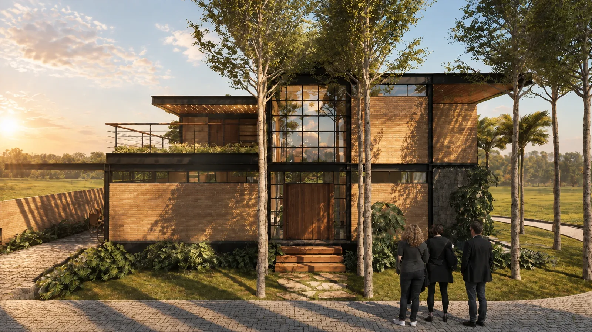
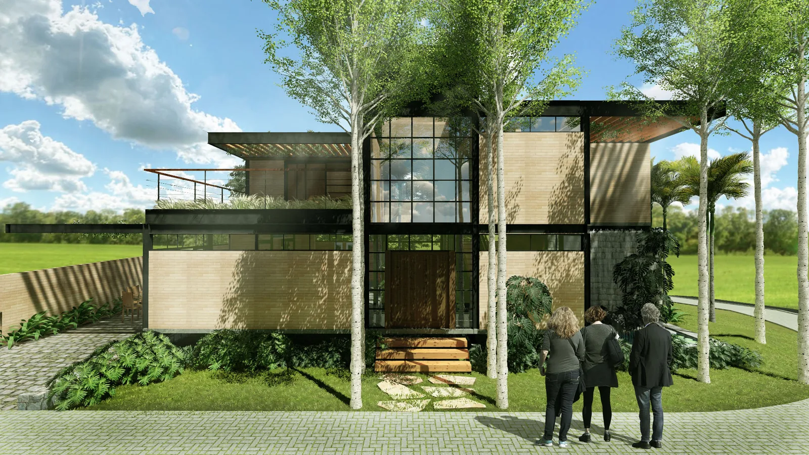
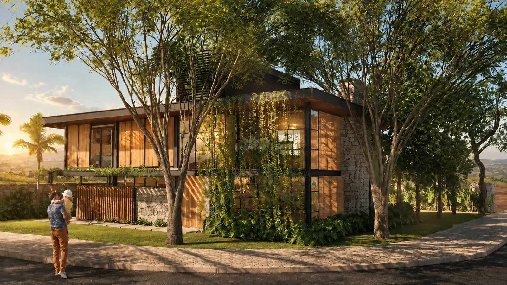
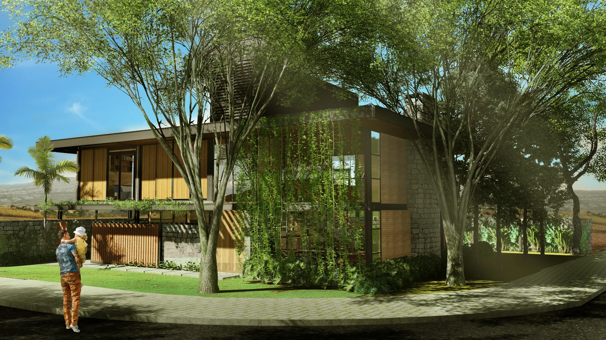
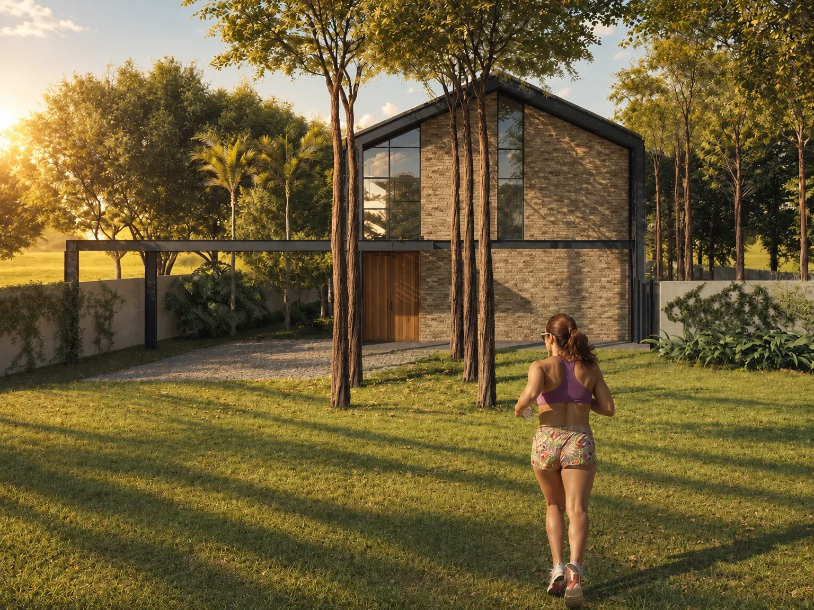
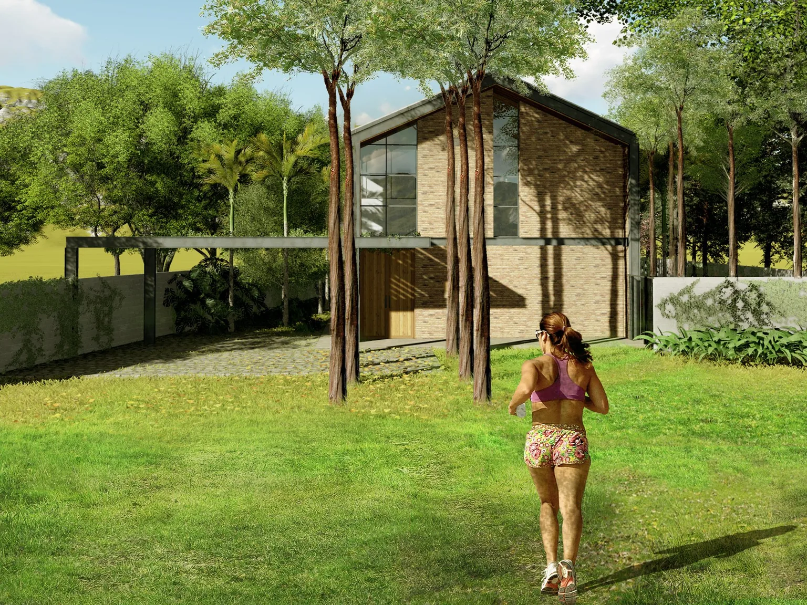
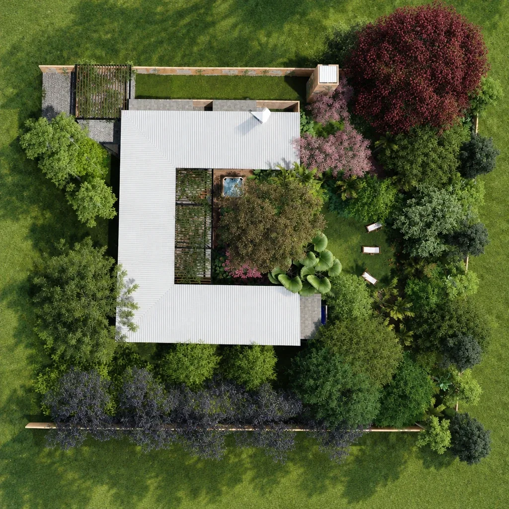
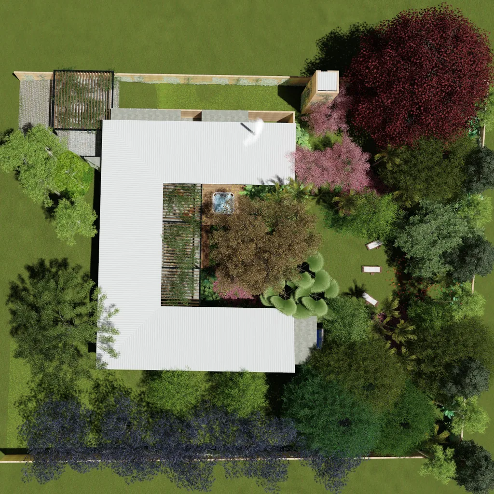

Renders: antes e depois
Arraste a linha para comparar o render original com a versão nova (GPT Image 2.5 Flare, 19/11/2026: primeiro o render em alta qualidade, depois a luz de fim de tarde). Também dá para usar as setas do teclado. Três versões novas já estão no site; a vista aérea da Casa A+E não, porque mudou a planta.
Casa Bela Vista (A+G)
No site: hero e galeria

Casa J.E.
No site: hero e galeria

Casa Prada
No site: faixa e galeria

Casa A+E · vista aérea
Não aplicado: mudou a planta

A casa ficou menor no terreno e as árvores e canteiros foram redistribuídos. O site continua com o render original desta vista.